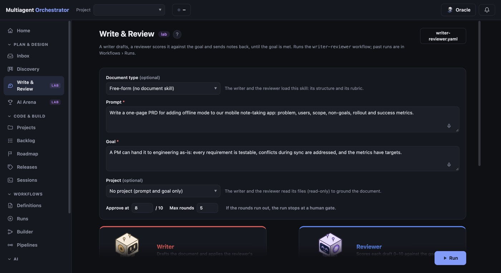
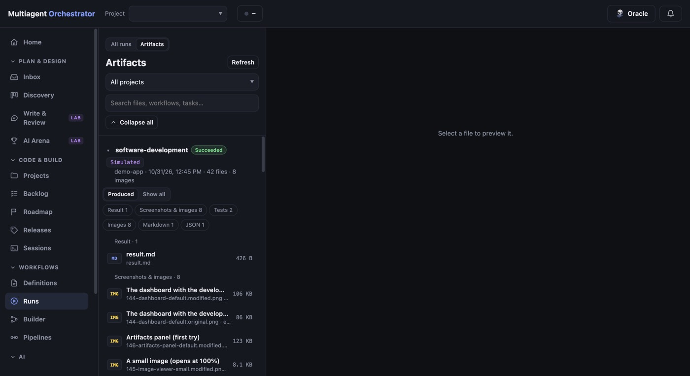
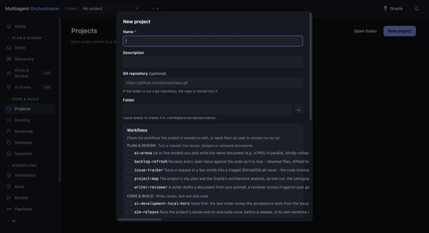

Write Doc
Transformar o jeito como as propostas desta conversa foram escritas numa função do app. Um writer escreve o documento em markdown, com screenshots de antes e de depois, e um leitor o mostra organizado. Você itera nele como num editor, selecionando um trecho e pedindo a correção no chat ao lado. Depois um reviewer comenta e você aprova. Junto, a reorganização dos workflows de Planning.
Recomendações em uma lista
- Um documento vivo por item (decisão do dono), em
docs/work/<item>/, do intent ao monitoramento, nas seis etapas do AI-native SDLC. Plan (intent.md) e Design (spec.md) são escritos aqui e aprovados por uma pessoa. Build (plan.md, com a tabela de progresso), Test, Deploy e Maintain são preenchidos pelos workflows e pelo Monitor. - O markdown é a única fonte. O writer gera e edita só markdown, nunca HTML. A leitura é feita por o leitor de documentos (prototipado numa sessão à parte, "Leitor dos documentos"), que renderiza o
.mdna hora, com JavaScript; nada de HTML renderizado é gerado nem commitado. Dependência: esta proposta usa esse leitor e não propõe um renderer próprio. - Layout validado: as seis etapas no topo, na horizontal e fixas, com status e a etapa atual; à esquerda, o índice da etapa aberta (acompanha a rolagem, os requisitos R1… entram como itens); o documento largo no centro, com os metadados no topo e o markdown original no fim. No celular, ☰ + a seção atual como aba, e uma gaveta com o índice.
- Uma tela, Plan & Design › Documents, no lugar de Write & Review e AI Arena. "Several writers" vira uma opção do rascunho.
- Um workflow,
write-doc, rodado uma vez para o intent e outra para o spec: evidências → rascunho → edição com você → revisão → aprovação. Os dois passos humanos são gates que nenhuma automação atravessa. - Dois tipos de documento:
intent-writing(problema, resultado, usuários e sistemas, restrições, perguntas) espec-writing, com o formato desta série: requisitos R1…Rn, antes/depois, decisões com opções e recomendação, fases, custos e perguntas com padrão. - Seleção → agente: cada título do markdown vira uma âncora estável. O chat envia o arquivo, a seção, o trecho exato e o contexto, e o writer reescreve só aquela seção. Acabou o "corrige o item 3 da D7".
- Screenshots sem rodar nada: quem escreve só nomeia as telas. As imagens são arquivos em
docs/work/<item>/images/, vindas do comando de screenshot do projeto quando ele existe, senão da captura pelo Run App, e por último do anexo manual. O "depois" vem do mesmo comando na branch do run, ou das telas da proposta de Mockups (#625), ou de imagens coladas. - Fonte em inglês, tradução ao lado: cada artefato tem a fonte em inglês (
intent.md,spec.md…) e a tradução em português ao lado (intent.pt-BR.md…); o front matter liga o par (translation:na fonte,source:na tradução). O writer edita primeiro o inglês e depois atualiza a tradução. Um pedido feito em português, sobre um trecho da tradução, é aplicado na fonte e propagado. O leitor tem um seletor EN / PT. - Imagens no chat: em qualquer iteração você cola ou anexa um screenshot no chat (o mecanismo do #130), e ele vai para o writer junto com a seleção.
- Revisão por pedido: cada pedido vira um commit ligado à mensagem. Clicar na mensagem mostra só o que a IA mudou naquele turno, em vermelho e verde dentro do documento, e uma fila de mudanças não revisadas diz o que falta validar.
- Portões do SDLC no app: "Accept intent" e "Sign off spec" são gates humanos que mudam o front matter e commitam (o tech lead assina os pontos de risco maior); depois do sign-off, "Create epic and phase issues" e o handoff para o Build pelo
plan.md, que o engenheiro aceita antes do código. - Reviewer comenta, não reescreve: as notas aparecem ancoradas nas seções, e você escolhe quais aplicar.
Onde estamos hoje
Capturas reais do main com dados simulados (npm run screenshot). Os dois fluxos de documento de hoje partem de um prompt e terminam num markdown que você aceita ou devolve inteiro. Não existe um jeito de apontar para um trecho.

writer-reviewer.yaml): prompt + objetivo; o writer escreve, o reviewer pontua de 0 a 10 e devolve notas até passar do limite; o supervisor confere e pergunta o que fazer. As suas instruções valem para o documento inteiro.
ai-arena.yaml): até cinco modelos escrevem o mesmo documento, criticam às cegas, um sintetizador junta e outra família verifica. No fim você aceita, pede outra síntese ou descarta.
markdownHtml: marked + DOMPurify, sem forms). Serve para ler, não para editar nem apontar.
evidence/. É o mesmo mecanismo que dá os "antes" de um documento.A dor que motivou o pedido, nas palavras do dono: para corrigir algo nesta conversa, era preciso achar o ponto no documento e dizer o número da seção. A proposta coloca a seleção de texto e o chat lado a lado no app.
O formato: um documento vivo por item
Decisão do dono: cada item de trabalho tem um documento só, do intent ao monitoramento, organizado nas seis etapas do AI-native SDLC playbook da Anthropic (Plan → Design → Build → Test → Deploy → Maintain). Cada etapa termina num artefato versionado, aprovado por uma pessoa. Tudo é commitado em docs/work/<item>/: os markdowns de cada etapa e as imagens de antes e depois, em images/. Nenhum HTML é commitado: o leitor de documentos (prototipado numa sessão à parte, "Leitor dos documentos") renderiza os .md na hora. O write doc é a parte que escreve Plan e Design; o resto é preenchido pelos workflows.

O front matter de cada .md
--- item: first-project-onboarding stage: design status: draft # draft → signed off intent: intent.md # o artefato anterior translation: spec.pt-BR.md approver: Eduardo Galbiati (product owner) date: 2026-10-31 ---
As seções do playbook
- intent.md: Problema · Resultado esperado · Usuários e sistemas afetados · Restrições · Perguntas em aberto
- spec.md: Requisitos (cada um como
**R1. Título.**) · Design · Pontos de atenção · Perguntas - plan.md: Arquivos que mudam · Ordem do trabalho · Riscos · Prova · Progresso
A fonte é sempre em inglês; a tradução em português fica ao lado (spec.pt-BR.md, com source: spec.md no front matter), com o mesmo conteúdo. O leitor troca entre as duas com o seletor EN / PT.
| Etapa | Arquivo | Quem preenche | Quem aprova |
|---|---|---|---|
| Plan | intent.md: problema, resultado esperado, usuários e sistemas afetados, restrições, perguntas em aberto | write-doc (writer + você) | o product owner |
| Design | spec.md: requisitos R1…Rn e o design, com as decisões e os pontos de atenção | write-doc (writer + você + reviewer) | o dono / tech lead |
| Build | plan.md: arquivos que mudam, ordem, riscos, prova, e a tabela de Progresso | o workflow feature/fix: o plano no começo; cada run, commit e PR acrescenta uma linha | o gate do developer |
| Test | test.md: a evidência | os runs: suíte, E2E, screenshots original/modificado, axe | o code owner |
| Deploy | deploy.md: a revisão e a release | a revisão de cada PR (pelo REVIEW.md do projeto) e o workflow release com o Ship | o code owner; o dono dá o Ship |
| Maintain | maintain.md: incidentes e post-mortems | o Monitor e o Night watch: um incidente entra aqui, gera um post-mortem e um novo intent | o service owner; o product owner para achados de produto |
O formato e o ciclo de vida do documento
O histórico do item fica num lugar só, commitado, e o leitor já tem uma página inicial com todos os itens para navegar e validar cada um.
O agente escreve só markdown. O leitor renderiza na hora, com o mesmo layout em todo documento (tema claro/escuro, accent, export para PDF). Isso simplifica a segurança (D5) e o lint.
Os workflows preenchem as etapas que ninguém escreve: a tabela de Progresso do plan.md, a evidência, a revisão, a release, os incidentes.
Depende do leitor (sessão à parte) e de os workflows de Build, Deploy e o Monitor aprenderem a escrever no documento (fases 4 e 5).
Abre no GitHub sem o app.
Duas fontes que divergem; cada edição vira dois diffs.
Liberdade de layout.
Um formato por documento, HTML do agente para isolar, e nada liga a proposta ao que foi construído.
Menor.
O documento morre na aprovação; o histórico do item volta a ficar espalhado em runs e PRs.
O que esta proposta entrega: o formato dos .md, o editor sobre o leitor e a escrita de Plan e Design. Fica para depois: os workflows preenchendo Build, Test e Deploy (fase 4), o Monitor alimentando o Maintain (fase 5) e o front que navega pelos intents.
Fluxo ponta a ponta
O write-doc roda uma vez para o intent.md e outra para o spec.md, com os mesmos sete passos. Os dois em âmbar são gates humanos. Os passos com decisão têm cartões com opções, prós e contras e a recomendação em verde.
Novo item
A tela Documents lista os itens do projeto do header com a etapa de cada um, lida do docs/work/ do repositório e dos runs em andamento. "New item" começa pelo intent; quando o intent é aprovado, o mesmo item oferece "Write the spec". "Several writers" liga o modo Arena no rascunho.
Documents
New itemProposals, RFCs and PRDs you write with the agents and review here. Approved documents are committed to the project under docs/work/.
Mock 1. A tela Documents, com a etapa de cada item, e o diálogo "New item". O pedido pode ser em português; o documento sai com a fonte em inglês e a tradução em português ao lado.
Onde a função vive
Um lugar para todos os documentos, com estado e histórico.
Arena vira opção ("Several writers"), não uma tela à parte.
Duas entradas "lab" do menu somem; quem já usa precisa achar a nova.
Nada some.
Três telas para a mesma ideia de "escrever um documento".
Junto do ciclo da ideia.
Nem toda proposta nasce de um card; esta nasceu de uma conversa.
Recomendação: A, com "Write a document" também no card do Discovery (o documento volta como anexo e versão do card, como Write & Review faz hoje).
A fonte e a página
O writer gera e edita só os .md da etapa, com o front matter (item, stage, status, approver, date e o link para o artefato anterior).
O leitor (dependência) renderiza com JavaScript, no app e fora dele; nada de HTML é gerado nem commitado. Diffs de texto limpos.
O editor depende de o leitor expor a posição de cada bloco no .md (D6).
Abre sem JavaScript.
Duas fontes; o HTML envelhece.
Layout livre.
Cada documento diferente, e HTML de agente para isolar e revisar.
Familiar.
O dono disse explicitamente que não quer.
Convenções do markdown: as seções do playbook por etapa; requisitos como **R1. Título.**, que viram itens do índice; uma decisão dentro de Design como ### D3 · título, com as opções e uma linha **Recommended:**; uma imagem como . O lint confere tudo isso.
Os tipos de documento
intent-writing e spec-writing RecomendadoIntent: problema, resultado esperado, usuários e sistemas afetados, restrições, perguntas em aberto.
Spec: o formato desta série (requisitos, antes/depois, decisões com opções e recomendação, fases, arquivos, custos, perguntas com padrão). RFC, PRD e design sketch viram modelos de spec.
Duas skills com rubrica para manter.
product-proposalMais simples.
Mistura o que o product owner aprova (o intent) com o que o time aprova (o spec).
Evidências: os screenshots de antes e depois
Quem escreve um plano ou uma proposta muitas vezes não é técnico e não consegue rodar o app do projeto para tirar screenshots. Por isso a captura é um passo de máquina, antes do rascunho: o writer só diz quais telas quer, e o app tira as imagens. É o que esta série fez à mão com npm run screenshot. As imagens vão com legenda para o writer, que as usa nos blocos "Hoje" e "Proposto".
| Ordem | Fonte | Antes | Depois | Depende de |
|---|---|---|---|---|
| 1 | O contrato de screenshot do projeto: o npm run screenshot deste app, ou o comando do próprio projeto (.multiagent/screenshot.yaml) | a base, com dados simulados (--ref <base>) | as telas de depois, capturadas pelo mesmo comando na branch do run | existe neste app; nos outros projetos, quando eles têm um (o cartão "Investigate screenshots" do onboarding cria esse spike) |
| 2 | Captura pelo Run App: o local preview sobe o front em sandbox e um browser headless tira as URLs pedidas | as telas de hoje | as telas de depois, na branch do run | o local preview configurado no projeto |
| 3 | Anexo manual: imagens coladas ou anexadas (#130), no "New item" ou no chat da edição | o que você colar | o que você colar | nada; funciona hoje |
De onde vêm as imagens
1) o contrato de screenshot do projeto; 2) a captura pelo Run App; 3) o anexo manual. O app escolhe sozinho e diz qual usou em cada imagem.
Quem não é técnico não precisa rodar nada: só nomeia as telas, ou cola uma imagem.
As fontes 1 e 2 dependem de o projeto saber rodar o front; quando não sabe, o cartão "Investigate screenshots" do onboarding vira um spike no roadmap dele.
Funciona em qualquer projeto, hoje.
Volta a depender de alguém que consiga rodar o app.
Flexível.
Um agente subindo apps e navegadores sozinho; caro e frágil.
O "depois": vem do mesmo comando de screenshot rodando na branch do run, das telas da proposta de Mockups (#625) quando ela existir, ou de imagens coladas. O writer nunca escreve HTML: só referencia as imagens no markdown. A captura acontece num passo de máquina, sem modelo. Enquanto o projeto não tem comando de screenshot nem local preview, o anexo manual cobre.
Rascunho
Com um writer, é um turno longo: lê o código (só leitura), as evidências e a skill, e escreve o markdown da etapa (intent.md ou spec.md), apontando para as imagens em images/. Com vários writers, o modo Arena de hoje: rascunhos em paralelo, crítica cega e síntese numa base só. Depois disso, o documento é um só e o resto do fluxo é igual. Um lint de máquina confere o markdown (front matter, seções do playbook, requisitos R1…, uma recomendação em cada decisão, imagens que existem) antes de você ver.
Editar com você: seleção + chat
O coração da função, sobre o layout validado: as etapas no topo, o índice à esquerda, o documento renderizado pelo leitor no centro e o chat com o writer à direita. Você seleciona um trecho e escreve o que quer. O writer reescreve só aquela seção, e ela aparece marcada como alterada. Você pode colar ou anexar um screenshot no chat (#130): ele vai junto com a seleção e, se o writer o usar, é gravado em images/. Experimente: selecione qualquer texto do documento abaixo.
has a review note
Spec: onboarding do primeiro projeto
R2 · Import, background clone
You give the repository and the project name. On Next the app checks access with git ls-remote and starts the clone in the background, so you move on to step 3 while it runs.

D3 · How the clone happens
The user picks analyses while it clones.
A big repository blocks the screen.
R3 · Analysis
The free profile runs always; the model analyses come checked, with the total shown.
Deixa claro que o clone é completo, não raso, e por quê. A bandeja hoje é assim.
Mock 2. O editor sobre o layout validado: as etapas no topo, o índice da etapa à esquerda, o documento (renderizado pelo leitor) no centro e o chat à direita. Selecionar texto no documento atualiza o chip de seleção (interativo nesta página). O bloco "Today / Proposed" é o componente antes/depois.
Documento e chat juntos: o chat ocupa a direita, no espaço que no leitor é do documento largo. O documento encolhe até uma largura mínima de leitura (cerca de 70 caracteres por linha). Abaixo disso, o índice vira o ☰ com a seção atual como aba, como no celular, e o chat pode ser recolhido para uma barra fina e voltar à leitura cheia. O chip "Selected" e as marcas de mudança continuam visíveis nos dois modos.
Como o documento é mostrado com segurança
iframe isolado, sobre markdown sanitizado RecomendadoO agente escreve só markdown. O leitor renderiza com o sanitizador (marked + DOMPurify, sem forms e sem HTML cru no markdown), e o único JavaScript que roda é o do próprio leitor.
No editor, o leitor abre num iframe sandbox="allow-scripts" de origem opaca, servido por doc://, com CSP sem rede e sem window.api; a seleção sai por postMessage já mapeada para o .md (D6).
O editor depende do contrato do leitor (posições de origem, eventos de seleção).
Layout livre.
Código do agente dentro do app, e contra a decisão de usar só markdown.
Sem dependência.
Dois renderers para o mesmo markdown, que divergem; o leitor já existe.
Como a seleção chega ao writer
A seleção acontece na página renderizada. O leitor marca cada bloco com as linhas de origem no .md (por exemplo data-src="41-52"), e cada título e cada R1, D3 vira uma âncora como spec-r2. O chat envia o arquivo, a âncora, as linhas, o trecho, 200 caracteres antes e depois e a versão
O writer devolve só a seção nova do markdown; o app troca as linhas, grava a versão e o leitor mostra de novo.
Renomear um título muda a âncora; o app segue o título pelo diff.
Reaproveita.
Texto não é imagem: o writer teria de adivinhar a frase.
Nada novo.
É a dor de hoje.
Seleção na tradução (ponto de atenção): quando você seleciona um trecho do spec.pt-BR.md, o pedido vale para a fonte. Fonte e tradução têm os mesmos títulos e as mesmas âncoras (spec-r2 nas duas), então a seção é exata. Dentro da seção, o app alinha os blocos pela ordem (o 3º parágrafo da tradução é o 3º da fonte) e manda ao writer o trecho em português, o bloco correspondente em inglês e a seção inteira das duas. O writer corrige a fonte e depois a tradução, no mesmo commit. Se o alinhamento falhar (a tradução tem um bloco a mais ou a menos), o app avisa e manda a seção inteira.
{ "item": "first-project-onboarding", "file": "spec.pt-BR.md", "source": "spec.md", "version": 9,
"anchor": "spec-r2", "lines": [41, 52],
"quote": "starts the clone in the background",
"before": "…On Next the app checks access with git ls-remote and ",
"after": ", so you move on to step 3 while it runs.",
"message": "Deixa claro que o clone é completo, não raso, e por quê." }
Aplicar na hora ou juntar comentários
Padrão: cada mensagem é um turno, e você vê a mudança em segundos.
"Queue" junta vários pedidos e aplica num turno só (mais barato numa leitura completa).
Dois modos para explicar.
Barato.
Perde a conversa rápida que o dono pediu.
Como o chat vira turnos de agente
Um passo novo, human_edit: o run espera por você, e cada pedido é um turno do writer na mesma sessão (persistente, com handoff note e fresh_after_idle: 55m).
O gate só termina com o seu "Send to review"; nenhuma automação o fecha.
Custo, tempo e versões ficam no run, visíveis em Runs.
Um tipo de passo novo no engine.
Sem mudar o engine.
A revisão e a aprovação ficariam num run e a edição fora dele; histórico partido.
Nada novo.
Perde o contexto a cada frase; caro.
Revisar só o que a IA mudou em cada pedido
Depois de vários pedidos, fica difícil saber o que mudou no documento para revalidar. Por isso cada pedido fica ligado à mudança exata que ele causou. Clicar numa mensagem do chat abre a mudança daquele turno, em vermelho e verde dentro do próprio documento renderizado. Uma fila de "mudanças não revisadas" mostra o que ainda falta você validar: Mark reviewed tira da fila, Undo this change desfaz só aquele turno. O gate de aprovação mostra quantas mudanças ainda não foram revisadas.
R2 · Import, background clone
On Next the app checks access with git ls-remote and starts the clone in the background a full clone in the background. It is not shallow, because Ways of working and the city need the history, so you move on to step 3 while it runs.
D3 · How the clone happens
Unchanged in this request.
Mock 3. A revisão por pedido: à esquerda os pedidos e o estado de cada um; à direita, a mudança daquele turno, inline no documento.
Versões e revisão por pedido
Cada pedido (seu, ou uma nota do reviewer que você aplicou) vira um commit na branch do run, com a fonte em inglês e a tradução da etapa em docs/work/<item>/, e o id da mensagem no commit.
Clicar na mensagem mostra o diff daquele turno, inline e só nas seções tocadas; "Mark reviewed" e "Undo this change" valem por pedido.
A fila de não revisadas e o contador no gate de aprovação mostram o que falta validar; a aprovação mescla a branch como qualquer run, e o histórico fica no repositório.
Um worktree aberto enquanto o documento está em edição; o diff inline compara o texto seção por seção.
Mais simples.
Junta as mudanças de vários pedidos; não dá para saber qual pedido mudou o quê.
drafts/vN como hojeJá existe no writer-reviewer.
Sem diff e sem ligação com o pedido.
Revisão: notas ancoradas
"Send to review" chama o reviewer. Ele pontua contra a rubrica da skill e contra o objetivo, e devolve notas ancoradas em seções, que aparecem no editor como comentários. Você aplica, edita ou descarta cada uma. Aplicar manda a nota para o writer como um pedido normal.
D3 · How the clone happens
A background job with a progress tray, and a full clone.
Costs
A typical import costs about $1–2.
Open questions
Q1 … Q9, each with a default.
Mock 4. A revisão. A rubrica vem da skill spec-writing; as notas ficam presas ao trecho.
O que o reviewer faz
Notas ancoradas, com Apply / Edit / Dismiss.
Uma opção "Auto-apply notes" para quem quer o loop automático de hoje (até N rodadas).
Mais cliques que o loop automático.
Zero cliques.
Reescreve o que você já tinha acertado na edição.
Mais barato.
Perde a checagem da rubrica (decisões sem recomendação, custos sem fonte).
Aprovação: Accept intent e Sign off spec (gates humanos)
Depois da revisão, o run para no gate human_approval da etapa. No intent, o botão é Accept intent e quem aprova é o product owner. No spec, é Sign off spec, dado pelo dono; os pontos que o spec marca como de risco maior (por exemplo, renomear workflows ou tirar o auto-push) pedem também o tech lead. Aprovar muda o front matter do .md (status: accepted ou signed off, com o aprovador e a data) e commita na branch do run. As outras respostas são Back to editing e Stop. Nenhuma automação responde esse gate, nem o Supervisor nem o Night watch.
The Product Owner proposes an epic and one sub-issue per phase of the spec; you review before anything is filed.
The feature workflow drafts plan.md; it stays a draft until the engineer accepts it, before any code.
A new version of the card's document.
Mock 5. O gate de sign-off do spec. O que vem depois (épica, Build) só roda depois do sign-off e de um clique.
Os portões do SDLC como etapas do app
É o fluxo que o onboarding seguiu à mão depois da revisão do dono: intent aceito, spec assinado (com o tech lead nos pontos de risco), artefatos commitados num PR de docs, uma épica com uma sub-issue por fase, e o Build começando pelo plan.md.
Accept intent e Sign off spec são gates humanos que mudam o front matter (status, aprovador, data) e commitam; os pontos marcados no spec pedem o tech lead.
Depois do sign-off, Create epic and phase issues: o Product Owner propõe a épica (com o status do SDLC no topo e o link para os artefatos) e uma sub-issue por fase, a partir dos requisitos e das fases do spec; o dono revisa antes de abrir.
Handoff para o Build pelo plan.md: o workflow feature escreve o plano, que fica draft até o engenheiro aceitar (plan mode) antes de qualquer código; depois a implementação preenche a tabela de Progresso.
Três passos novos na interface; criar issues e abrir PR continuam pedindo o clique do dono.
Nada novo.
O front matter, a épica e o PR de docs dependem de alguém lembrar; o fluxo validado no onboarding não se repete sozinho.
Mais simples.
O documento não mostra quem aprovou nem quando; a épica e o Build ficam sem ponto de partida.
Fora do sign-off: registrar as decisões assinadas em docs/agents/decisions.md fica para o run que implementa, como tarefa da épica, porque o log tem um limite de entradas.
Próxima etapa
O que a aprovação abre
O item oferece "Write the spec", que roda o write-doc para o spec.md.
"Create epic and phase issues" (D16) substitui o rfc-to-issues: cada sub-issue liga para a âncora da fase e dos requisitos.
"Start the Build" escreve o plan.md, que o engenheiro aceita antes do código.
Os artefatos (intent, spec, plan e os test, deploy e maintain vazios) vão para docs/work/<item>/ num PR de docs, ou num merge local, pelo caminho do projeto.
No modo remoto, push e PR são escritas no GitHub/GitLab: seguem o gate de sempre.
Anexo e nova versão do documento do card, ou o "Save to issue" de hoje.
Idiomas: a fonte é sempre em inglês, e a tradução em português é atualizada a cada pedido, no mesmo commit.
Os workflows de Planning: antigo → novo
A proposta de onboarding deixou o Planning de fora de propósito. Aqui está a forma nova: 3 workflows e 3 pipelines viram 2 workflows e 2 pipelines.
A nova forma do Planning
write-doc (1 ou vários writers) + issue RecomendadoUm fluxo de documento só, com edição humana e revisão.
Arena vira o modo "several writers" do rascunho.
Aliases mantêm os nomes antigos funcionando (manifestos, pipelines salvos, roadmap).
As duas telas "lab" viram uma.
Nada some.
Três jeitos de escrever um documento, cada um com seu gate.
writer-reviewerwriter ↔ reviewer até a nota; supervisor; você decidewrite-docbaseevidências → rascunho → edição com você → revisão com notas → aprovaçãoai-arenaaté 5 modelos, crítica cega, síntese, verificaçãowrite-docvira modowriters: 2–5 no rascunho; o resto do fluxo é o mesmoissue-trackerpedido → issue triadaissuerenomeiaganha a entrada "from a document" (lê fases e decisões)ai-arena-write-reviewArena, depois Write & Reviewwrite-docabsorvidowriters 2–5 já fazem as duas coisasrfc-to-issuesArena escreve a RFC, o issue tracker abre as issuesdoc-to-issuesrenomeiawrite-doc (qualquer tipo) → issue (validated)enrich-save-developWrite & Review enriquece a issue, salva, desenvolveenrich-issuerenomeiawrite-doc com issue-writing sobre a issue → Save to issue → featureArquitetura
Tela Documents
- itens e etapas, New item
- editor: etapas, índice, documento, chat
agent-chat.jscom chip de seleção- lê a seleção do iframe
- o leitor (dependência) no iframe
O leitor isolado
iframe sandbox="allow-scripts", origem opaca- protocolo
doc://, CSP sem rede - renderiza o
.mdna hora - seleção → linhas do
.md
Run write-doc
- capture (máquina)
- draft (writer / Arena)
human_edit(você)- review →
human_approval
Writer / reviewer
- qualquer CLI
- código do projeto só leitura
- escreve só em
docs/work/<item>/, no worktree do run - skills
intent-writing/spec-writing
Onde os arquivos ficam (D13)
<repo do projeto>/docs/work/<item>/ (commitado; item = issue ou card) intent.md Plan (fonte em inglês), aprovado pelo PO intent.pt-BR.md a tradução, com source: intent.md spec.md Design (fonte em inglês), aprovado pelo dono spec.pt-BR.md a tradução, com source: spec.md plan.md Build: o plano e a tabela de Progresso (workflows) test.md Test: a evidência (runs) deploy.md Deploy: revisão e release (PRs, Ship) maintain.md Maintain: incidentes e post-mortems (Monitor) images/ before-*.png, after-*.png <workspace>/runs/<run>/ (dado do run) chat.jsonl, notes.json, evidence/
Decisão do dono: os artefatos são dado da feature e da issue, não do usuário. Ficam commitados no repositório do projeto em docs/work/<item>/, para ter histórico e, mais adiante, um front que navega pelos intents. O run escreve e commita na branch dele, e a aprovação mescla com o gate de sempre. O que é do run (chat, notas, custos) fica no workspace. Alternativas descartadas: o workspace (sem histórico no repositório) e só a pasta do run (some entre centenas de runs).
O que muda no engine
- Passo
human_edit: um gate que aceita pedidos enquanto espera. Cada pedido vira um turno do agente indicado, e o gate só sai com a resposta do dono. Fica na mesma lista de gates protegidos (automação nunca responde). - Passo de captura (máquina): usa o contrato de screenshot do projeto (
scripts/screenshot.jsaqui,.multiagent/screenshot.yamlnos outros), senão a captura do Run App, e grava emimages/; as imagens coladas entram pelo mesmo caminho. - Lint de documento (máquina): o front-matter, as seções obrigatórias da skill, âncoras únicas, cada decisão com uma linha "Recommended", imagens que existem.
- Nenhum renderer novo: o editor e os workflows usam o leitor de documentos (prototipado numa sessão à parte, "Leitor dos documentos").
O editor é a base dos editores de artefatos do app
Decisão do dono: os Mockups (épica #625), que vêm depois, reaproveitam este editor trocando só o renderizador. É comum aos dois: a seleção sobre o que está renderizado, o chat lateral (agent-chat.js), o mapa da seleção para o trecho da fonte, um commit por pedido com o diff, a fila de "não revisadas" e o gate de revisão. O renderizador é o ponto de extensão do editor, com uma interface pequena: render(source), mapSelection(selection) → trecho da fonte (arquivo, linhas, trecho) e applyDiff(diff). O write doc traz o renderizador de markdown (o leitor); os Mockups acrescentam um renderizador de telas (iframe com sandbox e inspetor por data-mid), como o segundo consumidor.
Custos de chamadas reais
Ordem de grandeza, sem medição. Todo o desenvolvimento roda no provedor simulado (CRAFTORIO_SIMULATION_ONLY=1). Cada ação mostra o custo antes e conta no orçamento diário (#206).
| Ação | Modelo padrão | Estimativa |
|---|---|---|
| Captura das evidências, lint, diff, versões | nenhum | $0 |
| Rascunho com 1 writer (lê código + escreve um spec longo) | Opus | $1.00–3.00 |
| Rascunho com vários writers (Arena) | mistura de famílias | $3.00–10.00 |
| Pedido de edição numa seção (prompt cache) | Opus ou Sonnet | $0.05–0.40 |
| Revisão com notas | Sonnet | $0.20–0.60 |
| Primeira tradução (pt-BR) de um intent ou spec | Sonnet | $0.30–1.00 |
| Atualizar a tradução depois de um pedido (só a seção) | Sonnet | $0.02–0.10 |
Uma proposta como as desta série (rascunho, ~20 pedidos de edição, uma revisão, publicação em dois idiomas) ficaria em torno de $5–12. Os valores são chutes a confirmar no primeiro run real, avisado antes.
Plano faseado
O editor sobre documentos reais
- Uma página em
poc/doc-editor.htmlque abre o exemplo do onboarding no protótipo do leitor, com o chat ao lado. - Seleção → carga útil com
sid, trecho e contexto; nenhum modelo.
Pronto quando: selecionar em qualquer seção das propostas #625 e de onboarding gera a carga certa.
write-doc com edição e revisão
- Skills
intent-writingespec-writinge o lint do markdown; o leitor como dependência. - Workflow
write-doccom 1 writer, passohuman_edit, reviewer com notas,human_approval. - Tela Documents, editor com seleção, chat, versões (commits na branch do run), diff por seção.
- Os arquivos em
docs/work/<item>/(markdown e imagens), mesclados na aprovação. - Captura de evidências deste app pelo
npm run screenshot. - Cenários do provedor mock; seed de screenshot; feature E2E.
Pronto quando: escrever, editar por seleção, revisar e aprovar um documento, tudo no simulado.
Arena e a reorganização
- Modo "several writers" (o Arena dentro do
write-doc). - Aliases:
writer-reviewer,ai-arena→write-doc;issue-tracker→issue. - Pipelines
doc-to-issueseenrich-issue; as telas Write & Review e AI Arena saem do menu.
Pronto quando: pipelines salvos e manifestos antigos rodam pelos nomes novos.
Entregas e outros projetos
- Outras línguas de tradução além do português, se alguém pedir.
- Captura de outros projetos pelo contrato de screenshot ou pelo Run App, quando o projeto tiver um comando de screenshot ou um local preview.
- "Write a document" no card do Discovery; "Split into issues".
Pronto quando: uma proposta vai do pedido ao merge em docs/work/ sem trabalho à mão.
O documento vivo no Build, Test e Deploy
- O workflow feature/fix escreve o
plan.mde acrescenta uma linha de Progresso por run, commit e PR. - Os runs gravam a evidência no
test.md; a revisão e a release com o Ship, nodeploy.md.
Pronto quando: um item vai do intent à release com as seis etapas preenchidas.
Maintain e mocks interativos
- O Monitor e o Night watch registram incidentes no
maintain.md, escrevem o post-mortem e abrem um novo intent. - Um front para navegar pelos intents e validar cada um.
- "Interactive preview" com scripts numa origem opaca.
- Telas mock com o Kit visual da proposta de Mockups.
- Comentários de outras pessoas pelo servidor do engine.
Só se as fases 1–3 forem usadas.
Arquivos e áreas que mudam
verde = novo, âmbar = alterado.
fronts/plan/views/docs/docs.js · docs.css
fronts/plan/views/docs/doc-editor.js (iframe do leitor, seleção, chat)
fronts/plan/engine/channels/docs.js
fronts/plan/engine/domains/docs.js (lista
docs/work/ do repo + os runs em andamento)packages/shared/doc-model.js (carga da seleção, lint puro)
o leitor de documentos (dependência: posições de origem e eventos de seleção)
fronts/plan/views/duo, arena (saem do menu, redirecionam)
fronts/plan/views/discovery/discovery.js (Write a document)
packages/ui-kit/agent-chat.js (chip de seleção)
Desktop host
apps/desktop/host/main.js (protocolo
doc://)apps/desktop/host/window-guards.js
o passo
human_edit (gates do engine, na lista protegida)workflows/write-doc.yaml
skills/intent-writing/SKILL.md · skills/spec-writing/SKILL.md
pipelines/doc-to-issues.yaml · enrich-issue.yaml
workflows/issue-tracker.yaml →
issue (from a document)o carregador de workflows (aliases)
Testes e docs
scripts/screenshot/views/docs.js
features/docs.feature
docs/agents/renderer/documents.md
docs/agents/engine/gates-and-run-end.md (human_edit)
docs/agents/worktrees.md (um run de documento no worktree)
docs/agents/decisions.md (depois das decisões)
Perguntas em aberto, com o padrão recomendado
Padrão: tela "Documents", workflow write-doc.
Padrão: não; vira "Several writers (AI Arena)" no rascunho.
Padrão: não; o leitor remove HTML cru, e o único JavaScript que roda é o do leitor.
Padrão: sim, com "Queue" para juntar pedidos.
Padrão: não; "Auto-apply notes" fica como opção desligada.
Padrão: fonte em inglês e tradução em pt-BR, a língua da tradução vinda de Settings › Language.
Padrão: Opus no rascunho, o mesmo na edição (a sessão é a mesma); Sonnet para revisão e tradução.
Padrão: docs/work/<issue>-<slug>/, ou card-<id>-<slug> enquanto não há issue; renomear quando a issue nasce fica no mesmo commit.
Padrão: não no começo; pelo servidor do engine depois da revisão de segurança (#466–#470).
Como a proposta respeita as regras do AGENTS.md
- App em inglês: tela, skill e workflow em inglês; a fonte de cada artefato também é em inglês, com a tradução ao lado.
- O workspace é o produto: o que é dado do usuário e do run (chat, notas, custos) fica no workspace; os artefatos aprovados são dado da feature e ficam no repositório do projeto (decisão do dono).
- Gates humanos intocados:
human_editehuman_approvalsó terminam com o dono; Supervisor e Night watch nunca respondem. - Agentes sem supervisão: no rascunho e na revisão, suposições registradas no documento; só o dono conversa, no passo de edição.
- Código do usuário intocado: writer e reviewer leem o projeto e escrevem só em
docs/work/<item>/, no worktree do run; um passo de máquina recusa mudanças fora dessa pasta. - Segurança da página: o agente escreve só markdown; o leitor renderiza sanitizado, num iframe de origem opaca, sem rede e sem
window.api; a janela não navega. - Escritas no GitHub com clique: issues, push e PR só depois do Accept e de uma confirmação.
- Checagens só simuladas e custo explícito antes de cada ação real.